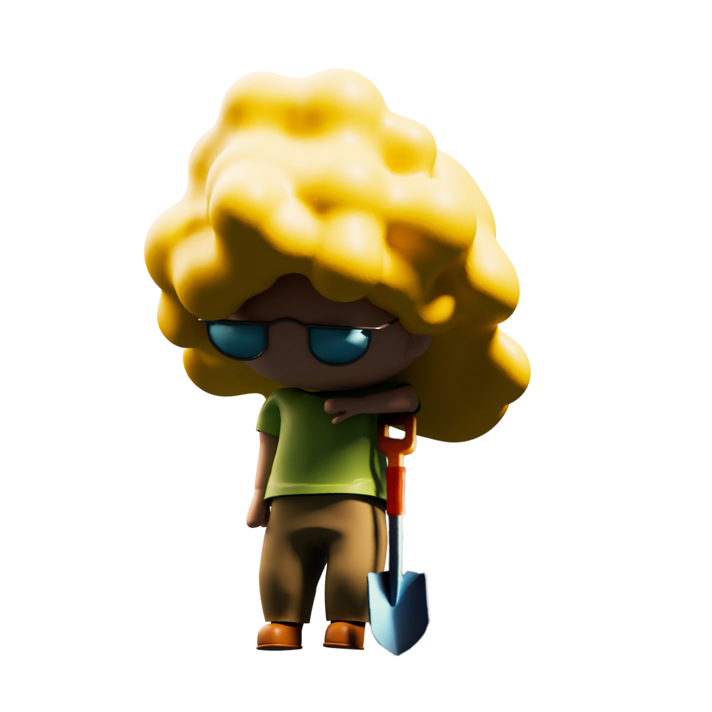

Tools

OVERVIEW:
Drop is a mobile videogame where players are striving to heal the planet, one ecosystem at a time. The goal was to create a visual engaging site to attract and educate potential players about the game and its environmental impact.
MY ROLE: (Team assignment)
As a frontend developer and 3D artist, I built responsive layouts and interactive elements to bring the game's visual to life.
TECHNOLOGIES:
Languages: HTML, CSS, javascript
Tools: VSCode, Git/Github, Photoshop, Blender, Premiere Pro, Google chrome(dev tool).
KEY FEATURES:
Fully responsive across mobile, tablet and desktop using media queries.
Character preview section featuring animations and engaging graphics.
OVERVIEW:
Design 404 error page
MY ROLE: (Solo assignment)
As a frontend developer and Designer, I built responsive layouts and 3D elements to give an innovative interpretation of a "page not found" to give the user a better experience of a moment of frustration
TECHNOLOGIES:
Languages: HTML, CSS, javascript
Tools: VSCode, Git/Github, Photoshop, Blender, Premiere Pro, Google chrome(dev tool).
KEY FEATURES:
Fully responsive across mobile, tablet and desktop using media queries.
OVERVIEW:
3D model and NFT creation for a web3 videogame available on playstore
MY ROLE: (team assignment)
As a 3D artist and Designer, my role focused on the creation, rigging, and animation of the main character models while ensuring seamless integration into Unreal Engine.
TECHNOLOGIES:
Tools: Photoshop, Blender, Premiere Pro
KEY FEATURES:
Fully rigged models, maintaining fidelity and optimization across platforms.
OVERVIEW:
3D sculpt of the statue of "the Marianne", which was physically expose in the Senate in Paris, and virtual tour of GRK Gallery. This combination of physical and digital bridges the gap between traditional and modern, inviting a global audience to engage with the work of Ghass.
MY ROLE: (team assignment)
As a 3D artist and Designer, my role was to blend traditional french cultural identity with contemporary artistic elements, and let the users experience the artist's vision in an interactive and engaging format.
TECHNOLOGIES:
Tools: Photoshop, Blender, Premiere Pro
KEY FEATURES:
Sculpt and model of the bust of "the Marianne de Ghass" ready for the foundry and an artistic journey behind Ghass's collection.
OVERVIEW:
The Alfonso Rotolo (italian winemaker) website completely redesigned to offer a more modern, seamless experiencefor users.
MY ROLE: (Solo Project)
As a frontend developer and graphic designer, I focused on clean aesthetics
and intuitive navigation.
TECHNOLOGIES:
Languages: HTML, CSS, javascript
Tools: VSCode, Git/Github, Photoshop, Google chrome(dev tool).
KEY FEATURES:
Fully responsive across mobile, tablet and desktop using media queries.
Visually appealing design.
OVERVIEW:
Basic to-do list application created as an educational project to improve fundamental skills in JavaScript. This app allows user to add, mark, and remove tasks.
MY ROLE: (Solo project)
As both the developer and the designer, I implemented the app's core functionality using JavaScrispt and styled it with HTML and CSS to ensure simple user-friendly experience.
TECHNOLOGIES:
Languages: HTML, CSS, javascript
Tools: VSCode, Git/Github, Photoshop, Google chrome(dev tool)
KEY FEATURES:
Functional task managment, users can add, delete and toogle the completion status of tasks. Educational focus on JavaScript, the app was built as a leraning tool for JS
syntax and structure.
OVERVIEW:
A classic snake game developed to practice interactive game development and to have a better understanding of JavaScript capabilities. In this version the game allows players to control a growing drop of water, eating ray of sun to increase its lenght and score.
MY ROLE: (Solo project)
As the developer, I implemented game mechanics and optimize functionality for both desktop and mobile.
TECHNOLOGIES:
Languages: HTML, CSS, javascript
Tools: VSCode, Git/Github, Photoshop, Google chrome(dev tool)
KEY FEATURES:
JavaScript-based game loop to control the snake's movement, detect collisions, and increase length upon eating food. It provides score tracking and reset functionality to restart the game without reloading the page.
I am a strong decision maker with excellent communication skills, flexibility, and adaptability. I am a fast learner and a natural problem solver, with experience in 3D modellin for game assets, animations, content creation and brand Identity. Additionally, I have a basic understanding of Python and SQL, and I am currently expanding my skill set by learning React.
Hello,
I am Francesca, a 33 years old self-taught creative frontend developer.
Even if I don’t have a very long experience, my freelancer work with Agog trained me to adapt to the different needs of a large range of customers, from independent to big corporations.
I love to push the boundaries of the guidelines without breaking them (except if you ask of course).
I am always up to new challenges that allow me to improve new skills and grow both personally and professionally.
Deadlines are my friends, and even if I know how to organise myself I appreciate to work in team.
I enjoy bringing web design to life using 2D illustrations and 3D animations.
I hope you enjoyed my video game style portfolio and trust me to be a part of your team.
Have a great day,
Francesca